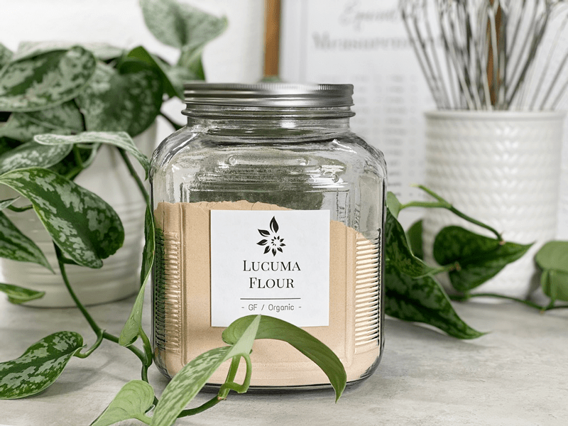

Lucuma Powder
On every post you read about sweeteners, please keep this thought in mind… Just because the dessert recipes on my site (or any other raw site) are raw, created on the foundation of whole foods, and are healthier than the typical SAD (Standard American Diet) desserts… they are still desserts and should be consumed with the same sensibilities.

I am not here to debate which sweetener is better than the other or whether or not you should consume them. You know your own health better than anyone else, so you will need to make those determinations for yourself.
To Use or Not to Use…
Sweeteners, in general, tend to face controversy at some point or another. My suggestion is to use sweeteners in their raw and purest form, so be sure to read the labels, and if you are concerned, called the manufacturers.
Some raw sweeteners are vegan, and some are not, you decide on what the priority is for you. All we can ask of ourselves is to make the best possible decisions with the information we are given and what is available to us.
Why do you use several sweeteners in one recipe?
I like to mix different sweeteners for several reasons. By layering multiple sweeteners, I can sometimes reduce the overall glycemic load, as well as create layers of flavor and sweetness. Plus, different sweeteners respond texturally in unique ways. For instance, dates not only add sweetness to a recipe but also works as a binder, holding cakes, cookies, and bars together. To keep the sugar levels down, I might add stevia, which bumps up the sweet level without adding more sugars or calories. In raw recipes, you always need to take your health needs in account, the texture that you want from a recipe, and the overall flavor.
 What is Luma Powder?
What is Luma Powder?
It starts with a fruit first… then converted into flour. The lucuma fruit has green skin, with a bright yellow-orange flesh and a large seed in the middle similar to an avocado… Lucuma is considered a healthy alternative sweetener as it lends a sweet taste to recipes but is very low in sugars.
Nutritional Data:
Loaded with nutrients, far too much science to document there, I decided to highlight just a few… Vitamin C which may function as an antioxidant as well as contribute to healthy immunity and bone health. Magnesium may contribute to normal bone health and immunity. Calcium which may assist in supporting strong bones. And potassium, which may help maintain healthy blood pressure.
What does it taste like?
An exotic, slightly sweet subtropical fruit grown in South America, the taste of lucuma has a distinctively sweet fragrance. It is full-bodied with rich flavors of maple, custard, and caramel. Can you image the taste of maple-like-butterscotch shortbread? It’s that!
What can I use it in?
Lucuma fruit powder provides a natural sweetening to desserts without increasing your blood sugar levels, unlike many sweeteners that offer empty calories and insulin spikes. It is a healthy alternative to sugar but isn’t near as sweet. Due to its mild sweetness to it, this is where I like to pair it with Stevia. Lucuma blends well in smoothies, puddings, and ice creams (adds a creaminess), and can also be used as a flour in raw pastries. It partners incredibly well with chocolate, softening, and warming the taste. Combined with cacao, it helps to satisfy any cravings for milk chocolate.
© AmieSue.com